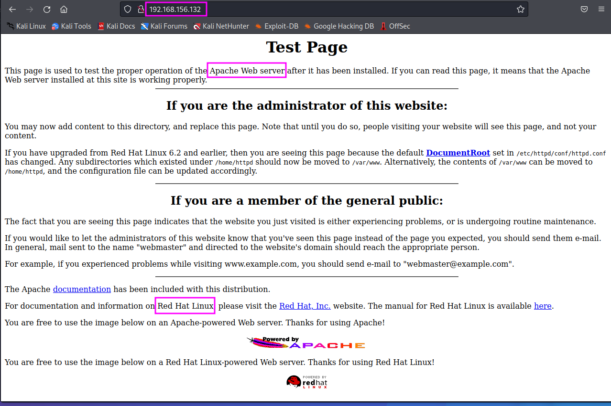
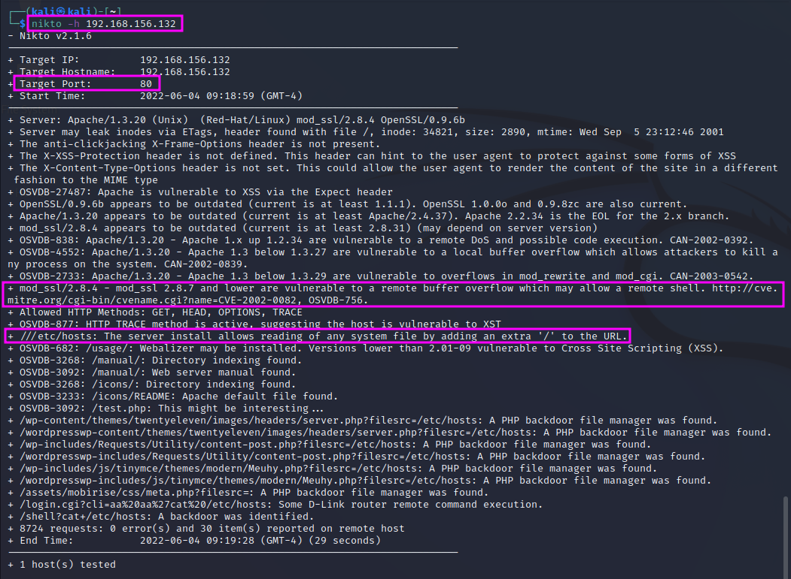
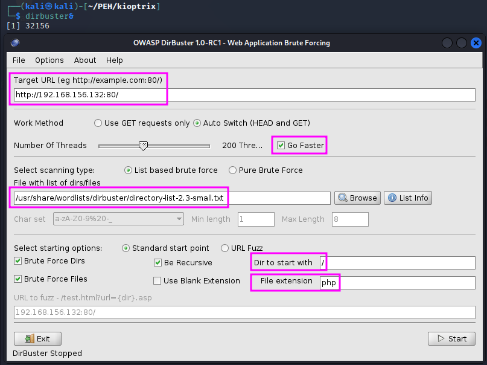
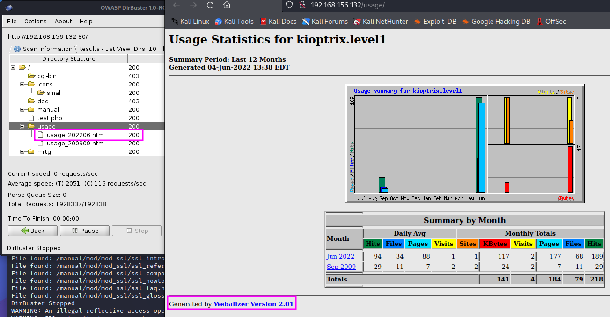

Enumerating HTTP and HTTPS
In this section, the open ports found with the Nmap scan are examined more closely, and additional information about services running on the webserver and sub-directories of the webpage are identified with a tool called dirbuster.
Part 1
The port scan with nmap showed a couple of open ports: especially 80/443 for HTTP and HTTPS, 139 for SMB can often be used for exploits. SMB and websites have been historically bad in terms of security, while SSH (port 22) was not been as bad. What we are aiming for is remote code execution that allows us to get a remote shell on the target machine from which we can then work further. As an attacker, we are looking for low hanging fruit first, and SSH is not in that category, whereas HTTP(S) is.
The first step here is to go to the website, i.e. http://192.168.156.132 and check what we can find there.
{kind=link}
If we try to go to the HTTPS website, we first get an error message from our browser informing us that the TLS version that is used by the website is outdated (V1.0 or 1.1, whereas Firefox requires at least V1.2). If we click through the warnings and accept all risk, we get the same output as in the HTTP version.
If we see a default webpage as the one found on HTTP(S) websites here, we can already draw some conclusions that we should put into our report (including a timestamp):
- The machine is running on Red Hat Linux.
- The website is built on an Apache webserver.
- Are there further directories behind this website? Are they hosting a website somewhere else, or have they just accidentally left ports 80 and 443 open, which would be a sign of bad IT hygiene.
- If we click on the hyperlink Documentation we are directed to a 404 error page with additional information disclosure: the Apache server version (1.3.20). In TCM’s video, also the server name kioptrix.level1 was revealed in the error message. That could be a naming convention that might be helpful later.
Another great tool is nikto, a web vulnerability scanner. If a website is running good security (e.g. a smart firewall), our computer might be auto-blocked if we use nikto. We can invoke it with nikto -h http://192.168.156.132. We should always store the scan results for future reference. They include a listing of findings of services, version numbers and sometimes already known vulnerabilities. It also provides information about directories on the website, known as directory busting.
{kind=link}
Especially the vulnerability of mod_ssl against remote buffer overflow is worth noting and can be exploited later.
Part 2
We will use a tool called dirbuster to do some directory busting (i.e. to explore the directory structure of the website). Other tools on Kali Linux are dirb and gobuster (not installed on my Kali Linux, but a repo exists).
dirbuster has a GUI. We have to enter the protocol (http) and the target, we can set the speed to “higher” and pick a wordlist that includes often used folder and file names. dirbuster has its own wordlists, found in /usr/share/wordlists/dirbuster. Since we are up against an Apache webserver, which runs php, we enter .php as the file extension. We could also enter more extensions, e.g. doc, zip, txt or pdf, but that would increase the duration of the scan accordingly. (Microsoft’s webserver IIS uses the file types asp and aspx. The third big player in the webserver game is nginx.)
We can check the search results while the scan is till running, just clicking on the Results tab, either showing the results as a list or in a tree view. We can also right-click on the results and chose Open in browser. The resulting website tells us that there is probably Webalizer Version 2.01 running on the webserver.
{kind=link}
TCM shows two more side topics:
- Right-clicking on a website and chosing View Page Source shows the HTML code behind the website. This code may contain information that we are not supposed to see, such as user credentials (user name, password) or other valuable information that we might use.
- BurpSuite can be used to intercept the web traffic, perhaps even modify it befor it is forwarded to the webserver. The responses from the webserver often disclose information, too, such as version numbers of services.
TCM explains that it is important to develop a methodology for the enumeration phase. Other tools might appear nicer than the ones shown in PEH, but when we come across a website, we are looking for service and version information, any sort of backend directories, source code, possible vulnerabilities (scan with nikto) and any sort of information that we can find.